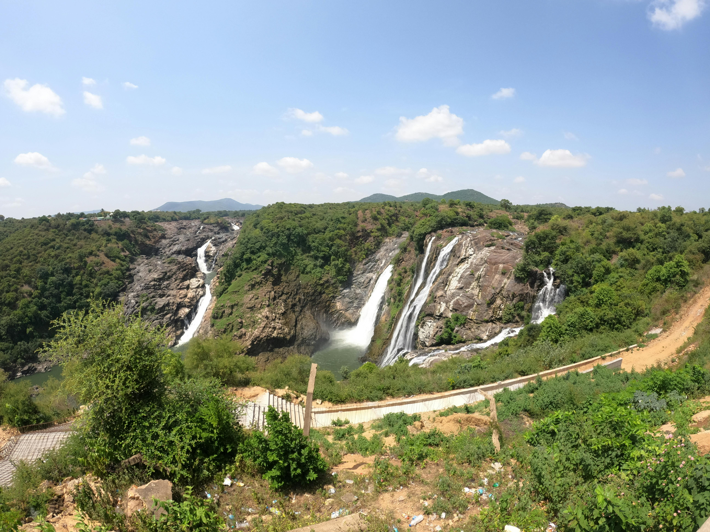

Mysore Palace
The iconic Mysore Palace, illuminated and in daylight, showcasing its architectural grandeur.

Jaganmohan Palace
The beautiful Jaganmohan Palace, now an art gallery, showcasing its unique architectural style.

Krishna Raja Sagara (KRS)
The majestic Krishna Raja Sagara dam and its beautiful Brindavan Gardens.
Shivanasamudra Falls
The breathtaking Shivanasamudra Falls, one of the oldest hydroelectric power stations in Asia.

Know More